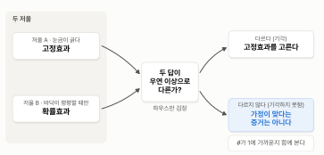
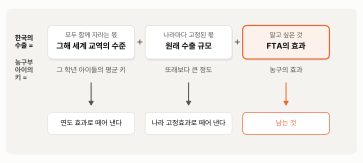
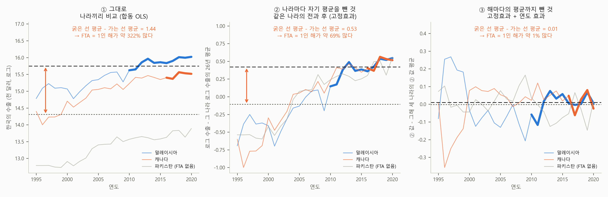

5. 무엇을 고르나 — 하우스만 검정과 연도 효과#
이 장 첫머리 보고서의 추정 결과 표 아래 통계 줄에는 이런 숫자가 있습니다.
주: … 하우스만 검정 1.51 (\(p\) = 0.47) …
그리고 해석의 마지막 항목은 “하우스만 검정도 둘의 차이를 기각하지 못한다”로 끝납니다. 앞의 두 절에서 고정효과와 확률효과를 보았습니다. 고정효과는 나라마다의 보이지 않는 차이 \(a_i\)가 설명변수와 관계가 있어도 쓸 수 있는 대신 거리처럼 변하지 않는 변수를 볼 수 없고, 확률효과는 나라끼리의 차이까지 써서 거리도 볼 수 있는 대신 \(a_i\)가 설명변수와 아무 관계가 없다는 가정이 필요했습니다. 그러면 실제 분석에서는 둘 중 무엇을 골라야 할까요? 하우스만 검정은 이 물음에 답하려고 만든 도구입니다.
미리 답부터 말하면, 하우스만 검정(Hausman test)은 두 모형의 계수 추정값을 맞대 보는 검정입니다. 두 추정값이 크게 다르면, 나라마다의 보이지 않는 차이 \(a_i\)가 설명변수와 아무 관계가 없다는 확률효과의 가정을 의심하고 고정효과를 고릅니다. 다만 두 추정값이 비슷하다고 해서 확률효과의 가정이 맞다는 증거는 아닙니다. 이 절에서는 하우스만 검정의 논리를 보고, 연도 효과를 넣으면 결론이 어떻게 달라지는지 확인한 뒤, 실제 분석에서의 선택 요령으로 이 장을 마칩니다.
두 저울 — 하우스만 검정의 논리#
물건의 무게를 저울 두 개로 달아 본다고 합시다. 저울 A는 눈금이 굵습니다. 정밀하지는 않지만, 어떤 물건을 올려도 대체로 맞는 무게를 가리킵니다. 저울 B는 눈금이 아주 가늘어 정밀합니다. 그런데 바닥이 평평할 때만 맞는 무게를 가리키고, 바닥이 기울어 있으면 엉뚱한 무게를 가리킵니다. 바닥이 평평한지는 눈으로 확인할 수 없습니다.
어떻게 하면 좋을까요? 같은 물건을 두 저울에 다 올려 보면 됩니다. 바닥이 평평하다면 두 저울은 같은 무게 근처를 가리킬 것입니다. 저울 A의 눈금이 굵어 조금 다를 수는 있겠지만, 그 정도의 차이는 눈금의 굵기로 설명됩니다. 반대로 두 저울이 눈금의 굵기로는 설명할 수 없을 만큼 다른 무게를 가리킨다면, 바닥이 기울어 있다고 의심해야 합니다. 그러면 저울 B를 믿지 말고 저울 A를 믿어야 합니다.
고정효과가 저울 A, 확률효과가 저울 B입니다. 고정효과는 같은 나라의 변화만 씁니다. 나라마다의 보이지 않는 차이 \(a_i\)는 자기 평균을 빼는 순간 함께 빠지므로, \(a_i\)가 설명변수와 관계가 있든 없든 맞는 답 근처를 가리킵니다. 바닥이 기울었든 평평하든 상관없는 저울인 셈입니다. 대신 나라끼리의 차이를 버리니 쓰는 정보가 적어 눈금이 굵습니다. 확률효과는 나라끼리의 차이까지 섞어 써서 정보가 많으니 눈금이 가늡니다. 그런데 나라끼리의 차이에는 \(a_i\)가 섞여 있어, \(a_i\)가 설명변수와 관계가 있으면(바닥이 기울어 있으면) 그만큼 답이 한쪽으로 치우칩니다. \(a_i\)가 설명변수와 아무 관계가 없을 때(바닥이 평평할 때)만 맞는 답을 가리키는 것이죠. 하우스만 검정은 두 모형의 계수가 얼마나 다른지를, 그 차이가 우연(눈금의 굵기)으로 설명될 만한지와 비교합니다. 대략 이런 계산입니다.
분자는 두 계수 추정값의 차이입니다. 분모는 두 답이 우연히 다를 수 있는 정도인데, 고정효과가 확률효과보다 덜 정밀한 만큼(분산이 큰 만큼)을 나타냅니다. 두 계수의 분산의 차이로 이렇게 간단히 쓸 수 있는 것은, 바닥이 평평하다면 두 저울이 같은 무게를 겨냥하고 그중 저울 B, 즉 확률효과가 가장 정밀하기 때문입니다. 두 답의 차이가 클수록, 그리고 우연히 다를 수 있는 정도가 작을수록 통계량이 커집니다. 통계량이 충분히 크면(\(p\)값이 작으면) “두 모형의 답이 같다”, 즉 “확률효과의 가정이 맞다”는 귀무가설을 기각하고 고정효과를 고릅니다. 계수가 여러 개면 계수마다의 차이를 한꺼번에 모아 같은 계산을 합니다.
기각하지 못했다는 것의 뜻#
이 장의 자료에서 하우스만 통계량은 1.51, \(p\)값은 0.47입니다. 기각하지 못합니다.[1] 보고서의 표에서 보듯이 두 모형의 FTA 계수는 0.121과 0.128, GDP 계수는 1.056과 1.049로, 두 저울이 거의 같은 무게를 가리킵니다.
교과서에서는 흔히 이럴 때 “확률효과를 쓰라”고 권합니다. 두 답이 다르지 않다면 더 정밀한 쪽을 쓰는 것이 낫다는 논리입니다. 그런데 이 자료에서는 조심해야 할 사정이 있습니다. 앞 절에서 보았듯이 확률효과의 \(\theta\)가 0.9라서, 확률효과는 자기 평균의 90%를 빼는 거의 고정효과 같은 계산을 했습니다. 두 저울이 같은 무게를 가리킨 것은 바닥이 평평해서가 아니라, 저울 B가 사실상 저울 A처럼 작동했기 때문일 수 있습니다. 실제로 이 자료에는 바닥이 기울어 있다고 의심할 이유(원래 수출 규모 \(a_i\)가 큰 나라와 FTA를 맺었다)가 이미 있었습니다.
그래서 이렇게 기억해 두는 것이 좋습니다. 하우스만 검정을 기각하지 못했다는 것은 “두 답이 구별되지 않는다”는 뜻이지, “확률효과의 가정이 맞다”는 증거가 아닙니다. 단순회귀분석 장에서 배운 대로, \(p\)값이 크다는 것은 차이가 없다는 증명이 아니라 차이를 확인하지 못했다는 뜻이니까요. 그림 5-1은 하우스만 검정으로 모형을 고르는 흐름을 정리한 것입니다.

그림 5-1. 하우스만 검정으로 고르는 흐름. 두 모형의 답이 우연으로 볼 수 있는 정도보다 크게 다르면 고정효과를 고른다. 다르지 않다면 \(\theta\)를 함께 본다.
그림에서 보듯이 하우스만 검정이 뚜렷한 결론을 주는 것은 위쪽 갈래, 두 답이 다를 때뿐입니다. 아래쪽 갈래에 이르면 \(\theta\)를 함께 보고, 두 답이 같은 이유가 무엇인지 따져 보아야 합니다. 이 장의 자료는 아래쪽 갈래에 있고, \(\theta\)는 0.90이었습니다. 연도 효과를 넣으면 위쪽 갈래로 옮겨 가는데, 이것은 뒤에서 봅니다.
모두 함께 자라는 몫 — 연도 효과#
지금까지의 회귀식에는 빠진 것이 하나 있습니다. 해마다 모든 나라에 똑같이 일어난 변화입니다.
1995년부터 2020년 사이에 한국의 수출은 거의 모든 나라로 함께 늘었습니다. 세계 교역 자체가 커졌고, 물가도 해마다 올랐습니다(이 자료의 금액은 물가를 맞추지 않은 명목 달러라, 물가가 오른 만큼 금액도 커집니다). 2009년에는 세계 금융위기로 거의 모든 나라로의 수출이 함께 줄었고, 2020년에는 코로나19로 다시 출렁였습니다. 이런 움직임은 어느 한 나라의 사정이 아니라, 그해에 모든 나라에 함께 일어난 변화입니다.
고정효과가 나라마다의 자기 높이 \(a_i\)를 따로 잡아 두었듯이, 해마다 모든 나라에 함께 일어난 변화도 따로 잡아 둘 수 있습니다. 연도마다 더미를 하나씩 달면 됩니다. 이것을 연도 효과(또는 시간 고정효과)라고 부릅니다. 반 아이들의 키로 말하면, 모든 아이가 해마다 함께 자라는 몫을 빼고 “같은 학년 친구들보다 더 자랐나”를 보는 것입니다.
3절에서 본 것처럼, 민준이를 농구부에 들어가기 전과 후로 비교하면 또래보다 큰 정도는 차이에 나타나지 않습니다. 그런데 그사이 민준이는 나이를 먹으며 저절로 자랐습니다. 숫자로 따라가 봅시다. 민준이의 키는 세 부분으로 나눠 볼 수 있습니다. 그 학년 아이들의 평균 키, 민준이가 또래보다 큰 정도(고정효과), 그리고 (있다면) 농구의 효과입니다. 표 5-1은 설명을 위해 만든 숫자입니다.
표 5-1. 민준이의 키를 세 부분으로 나누면 (설명을 위한 예)
그 학년 아이들의 평균 키 |
또래보다 큰 정도 |
농구의 효과 |
민준이의 키 |
|
|---|---|---|---|---|
3학년 (들어가기 전) |
130cm |
5cm |
0cm |
135cm |
5학년 (들어간 뒤) |
142cm |
5cm |
2cm |
149cm |
뒤 − 전 |
12cm |
0cm |
2cm |
14cm |
무역 자료에서는 |
그해 세계 교역의 수준 |
원래 수출 규모 |
FTA의 효과 |
한국의 수출 |
표에서 보듯이 농구부에 들어가기 전과 후를 비교하면 14cm 차이가 납니다. 또래보다 큰 정도 5cm는 이 차이에 나타나지 않지만, 그사이 모든 아이가 함께 자란 12cm(첫째 칸)가 들어 있습니다. 거꾸로 단체 사진처럼 5학년 때 또래와 비교하면 어떨까요? 민준이(149cm)는 5학년 평균(142cm)보다 7cm 큽니다. 이 7cm에는 함께 자란 몫은 없지만, 또래보다 큰 정도 5cm가 들어 있습니다. 두 비교는 저마다 한 가지를 해결하고 한 가지를 남기는 셈입니다. 둘을 함께 쓰면, 즉 민준이가 전과 후에 자란 14cm에서 또래가 같은 기간에 자란 12cm를 빼면, 농구의 효과 2cm만 남습니다. 나라 고정효과와 연도 효과를 함께 넣는 것이 바로 이 계산입니다. 나라 고정효과가 둘째 칸(또래보다 큰 정도, 무역 자료에서는 원래 수출 규모)을, 연도 효과가 첫째 칸(모두 함께 자라는 몫)을 맡습니다. 그림 3-2에서 FTA를 맺지 않은 파키스탄으로의 수출도 말레이시아, 캐나다와 함께 늘었던 것이 이 무역 자료에서 모두 함께 자라는 몫입니다. 그림 5-2는 이 세 몫을 무역 자료와 반 아이들로 나란히 정리한 것입니다.

그림 5-2. 한국의 수출을 세 몫으로 나누면. 윗줄: 무역 자료. 가운뎃줄: 표 5-1의 반 아이들. 아랫줄: 각 몫을 다루는 방법. GDP와 오차는 생략했다.
그림에서 보듯이 회귀식에 넣는 두 가지가 저마다 한 몫씩 맡습니다. 연도 효과는 그해 모든 나라에 함께 일어난 몫을, 나라 고정효과는 나라마다 고정된 몫을 떼어 내고, 남은 것으로 FTA의 효과를 봅니다.
같은 이야기를 실제 자료로 확인해 봅시다. 그림 5-3은 그림 3-2와 동일한 세 나라(말레이시아, 캐나다, 파키스탄)로 세 가지 비교를 해 본 것입니다. 패널마다 굵은 선(FTA를 맺은 뒤의 해)의 평균에서 가는 선(그 밖의 해)의 평균을 뺐습니다. 이 차이가 그 비교 방법으로 본 FTA의 효과입니다.

그림 5-3. 말레이시아, 캐나다, 파키스탄으로 본 세 가지 비교. ① 그대로, ② 나라마다 자기 평균을 뺀 것, ③ 해마다의 평균까지 뺀 것. 검은 긴 점선은 굵은 선(FTA를 맺은 뒤의 해)의 평균, 회색 짧은 점선은 가는 선(그 밖의 해)의 평균. 세 나라만으로 그린 것이라 숫자는 보고서와 다르다.
그림에서 보듯이 ①처럼 나라끼리 비교하면 322%입니다. FTA를 맺은 두 나라가 원래부터 파키스탄보다 교역이 많았던 몫이 그대로 들어 있습니다. ②처럼 나라마다 자기 평균을 빼면 높이 차이는 사라지지만 69%가 남습니다. 굵은 선은 모두 뒤쪽 해에 있는데 세 나라 모두 해가 갈수록 함께 늘었으니, 뒤쪽 해라서 높은 몫까지 FTA의 효과에 섞여 들어간 것입니다. 표 5-1의 14cm와 같은 일입니다. ③처럼 해마다의 평균까지 빼면 1%가 됩니다. 표 5-1의 2cm처럼, 두 가지 몫을 다 떼어 내고 남은 것입니다. 이 세 나라만 보면 FTA의 효과는 거의 없는 셈입니다.
보고서의 숫자가 이 그림과 다른 것은 206개국 전체를 쓰고, 회귀식에 GDP를 함께 넣었기 때문입니다. 특히 상대국 GDP가 모두 함께 늘어난 몫의 상당 부분을 맡아서, 연도 효과를 넣지 않은 고정효과 모형에서도 FTA의 효과가 13%에 그쳤습니다. 그래서 이 장의 무역 자료에서는 연도 효과를 넣어도 FTA의 계수가 크게 달라지지 않습니다.
표 5-2는 보고서의 고정효과와 확률효과에 연도 효과를 넣어 다시 추정한 결과를 나란히 놓은 것입니다.
표 5-2. 연도 효과를 넣기 전과 넣은 뒤 (종속변수: 로그 수출)
고정효과 |
확률효과 |
고정효과 + 연도 효과 |
확률효과 + 연도 효과 |
|
|---|---|---|---|---|
로그(상대국 GDP) |
1.056 (0.047) |
1.049 (0.040) |
0.808 (0.094) |
0.914 (0.059) |
로그(거리) |
— |
−0.962 (0.203) |
— |
−1.065 (0.199) |
FTA |
0.121 (0.087) |
0.128 (0.086) |
0.104 (0.106) |
0.136 (0.104) |
연도 효과: 1996년 |
— |
— |
0.129 (0.065) |
0.121 (0.064) |
… |
||||
연도 효과: 2000년 |
— |
— |
0.189 (0.087) |
0.172 (0.087) |
… |
||||
연도 효과: 2004년 |
— |
— |
0.315 (0.105) |
0.258 (0.100) |
… |
||||
연도 효과: 2008년 |
— |
— |
0.658 (0.155) |
0.541 (0.130) |
연도 효과: 2009년 |
— |
— |
0.490 (0.148) |
0.378 (0.126) |
… |
||||
연도 효과: 2011년 |
— |
— |
0.703 (0.170) |
0.567 (0.141) |
… |
||||
연도 효과: 2019년 |
— |
— |
0.322 (0.193) |
0.153 (0.154) |
연도 효과: 2020년 |
— |
— |
0.275 (0.193) |
0.111 (0.158) |
FTA의 \(p\)값 |
0.16 |
0.14 |
0.33 |
0.19 |
관측 수 |
4,909 |
4,909 |
4,909 |
4,909 |
주: 괄호는 나라 단위 군집 표준오차. 앞의 두 열은 보고서의 표와 동일한 모형이다. 연도 효과는 1995년에 비해 그해 모든 나라로의 수출이 함께 얼마나 높았는지를 로그로 나타낸 것으로, 본문에서 읽는 해와 몇 해만 싣고 나머지(…)는 생략했다. 하우스만 검정은 앞의 두 열끼리 1.51(\(p\) = 0.47), 연도 효과를 넣은 두 열끼리 11.82(\(p\) = 0.003)이다.
표에서 보듯이 나라 고정효과에 연도 효과까지 넣으면, FTA의 계수는 0.121에서 0.104로 조금 줄고(표준오차 0.106, \(p\)값 0.33), GDP의 계수는 1.056에서 0.808로 크게 줄어듭니다. GDP의 계수가 많이 준 것은, 상대국 GDP와 한국의 수출이 해마다 함께 늘어난 움직임의 상당 부분이 모든 나라에 함께 일어난 변화였다는 뜻입니다. 모든 나라의 GDP가 함께 커지던 해에 한국의 수출도 모든 나라로 함께 늘었으니까요.
흥미로운 것은 하우스만 검정의 결론입니다. 확률효과에도 연도 효과를 똑같이 넣고 두 모형을 맞대 보면(표의 오른쪽 두 열), 하우스만 통계량이 11.82, \(p\)값이 0.003으로 기각됩니다. GDP의 계수가 고정효과 모형에서는 0.808, 확률효과 모형에서는 0.914로 벌어졌기 때문입니다. 연도 효과를 넣기 전에는 구별되지 않던 두 답이, 모든 나라에 함께 일어난 변화를 떼어 내자 구별되기 시작한 것입니다. 하우스만 검정의 결론도 회귀식에 무엇을 넣느냐에 따라 달라질 수 있다는 예입니다. 연도 효과를 넣은 회귀식이 기본이라면(이 절 끝 “실제 분석에서의 선택”의 4번), 이 자료에서 고를 모형은 고정효과입니다.
연도 효과의 계수를 들여다보면#
연도 더미를 넣으면 해마다 계수가 하나씩 나옵니다. 기준 해(1995년)에 비해 그해에 모든 나라로의 수출이 함께 얼마나 높았는지를 나타냅니다. 표 5-2의 ‘고정효과 + 연도 효과’ 열에서 2008년의 연도 효과는 0.658, 2009년은 0.490입니다. 한 해 사이에 0.168, 즉 약 15% 떨어졌습니다. 세계 금융위기로 모든 나라로의 수출이 함께 줄어든 몫입니다. 2019년(0.322)에서 2020년(0.275)으로도 약 5% 줄었습니다. 코로나19의 해입니다. 이 값들은 상대국 GDP의 변화를 감안하고 남은 공통의 움직임이라, 한국의 수출 자체가 늘거나 준 정도와는 다릅니다.
우리 주위의 연도 효과 — 시험이 쉬웠던 해#
모든 대상에 함께 일어난 변화는 우리 주위의 자료에 늘 끼어 있습니다. 경기가 좋았던 해에는 모든 회사의 매출이, 시험이 쉬웠던 해에는 모든 학교의 점수가 함께 오릅니다. 그래서 제도나 정책의 효과를 따질 때마다 이 몫을 떼어 내야 합니다. 학교의 예로 봅시다. 어느 교육청이 고등학교 50곳의 학교별 평균 모의고사 점수를 10년 동안 모았고, 그사이 20곳이 새 수업 방식을 도입했다고 합시다. 도입한 학교의 점수가 도입 뒤에 올랐다면 새 수업 방식 덕분일까요? 그해 시험이 쉬웠다면 모든 학교의 점수가 함께 올랐을 것입니다. 학교 고정효과만 넣으면, 새 수업 방식을 도입한 뒤의 해들이 마침 시험이 쉬웠던 해들과 겹칠 때 그 몫까지 효과에 섞여 들어갑니다. 연도 효과를 넣으면 그해 모든 학교의 평균 점수를 기준으로 삼으니, 시험이 쉬웠던 몫은 빠지고 “도입한 학교가 그해 다른 학교보다 더 올랐나”만 남습니다. 표 5-1에서 민준이가 같은 학년 아이들보다 더 자랐는지를 본 것과 같은 계산입니다.
FTA의 효과는 해가 지나며 커졌나#
보고서의 고정효과 모형이 보여 주는 FTA의 효과는, 같은 나라에서 FTA 뒤의 해들 전체와 앞의 해들 전체를 비교한 것입니다. 보고서 한계의 둘째 줄 “FTA 효과는 발효 뒤 모든 해의 평균으로 보았고, 해가 지나며 커지는지는 따로 보지 않았다”가 이것을 말합니다. 한국의 FTA는 관세를 여러 해에 걸쳐 단계적으로 내리는 경우가 많고, 기업이 새 시장에 자리 잡는 데도 시간이 걸립니다. 그렇다면 효과는 발효 직후에는 작고 몇 해 뒤에 커질 수 있는데, 평균 하나로는 이것이 보이지 않습니다.
해가 지나며 커지는지 보려면, FTA 더미 하나 대신 발효 뒤 몇 해째인지에 따라 더미를 나눠 넣으면 됩니다. 발효한 해부터 2년 뒤까지(0~2년), 3~5년, 6년 이후의 더미 셋을 넣어 고정효과 모형을 추정한 결과가 표 5-3입니다. 연도 효과를 넣기 전과 넣은 뒤를 나란히 놓았습니다.
표 5-3. 발효 뒤 몇 해째인가에 따른 FTA의 효과 (종속변수: 로그 수출)
발효 뒤 |
고정효과 |
고정효과 + 연도 효과 |
들어 있는 나라 |
|---|---|---|---|
0~2년 |
0.159 (0.103) |
0.029 (0.112) |
54개국 |
3~5년 |
0.199 (0.096) |
0.148 (0.116) |
49개국 |
6년 이후 |
0.015 (0.097) |
0.146 (0.123) |
45개국 |
주: 괄호는 나라 단위 군집 표준오차. 두 열 모두 설명변수에 GDP가 들어 있다. 들어 있는 나라는 그 구간의 해가 자료에 하나라도 있는 나라의 수다.
표에서 보듯이 연도 효과를 넣기 전에는 3~5년이 가장 크고 6년 이후에는 거의 0입니다. 해가 지날수록 커지는 모습이 아닙니다. 그런데 연도 효과를 넣으면 모양이 바뀝니다. 발효 뒤 0~2년에는 거의 0이고, 3년째부터 0.15 안팎으로 올라선 뒤 그대로 머뭅니다. 관세가 단계적으로 내려간다는 이야기와 맞는 모양입니다.
왜 달라졌을까요? 6년 이후에 해당하는 해는 대부분 2010년대 후반입니다. 표 5-2의 연도 효과에서 보듯이, 2011년(0.703)을 고비로 모든 나라로의 수출이 함께 낮아지던 때입니다. 연도 효과를 넣지 않으면 이 공통의 내리막이 6년 이후의 FTA 계수에 섞여 효과를 작게 보이게 합니다. 연도 효과가 그 몫을 떼어 내자 6년 이후의 계수가 커진 것입니다. 앞의 학교 예로 말하면, 새 수업 방식을 도입한 뒤의 해들이 마침 시험이 어려웠던 해들과 겹친 셈입니다.
다만 이 숫자들을 너무 믿지는 말아야 합니다. 연도 효과를 넣은 세 계수는 모두 0과 분명히 구별되지 않습니다(\(p\)값 0.79, 0.21, 0.23). 그리고 구간마다 들어 있는 나라가 달라서, 세 숫자를 같은 나라들이 걸어온 길로 읽기도 어렵습니다. 자료가 2020년에서 끝나니, 6년 이후 구간에는 2013년까지 FTA를 맺은 45개국만 들어 있고 오스트레일리아, 캐나다, 중국처럼 2015년 이후에 맺은 나라는 빠집니다. 그래서 이 표에서 얻을 수 있는 것은 “효과가 이렇게 자랐다”가 아니라, 보고서의 평균 13%에는 효과가 거의 없던 발효 직후의 해들도 섞여 있을 수 있다는 정도입니다. FTA를 맺은 해가 나라마다 달라 이런 계수가 한쪽으로 치우칠 수 있다는 점도 있어, 이 장에서는 더 다루지 않습니다.
실제 분석에서의 선택#
지금까지의 이야기를 실제 분석의 요령으로 정리하면 이렇습니다.
기본은 고정효과입니다. 확률효과의 가정이 필요 없습니다. 보이지 않는 대상의 특성이 설명변수와 관계가 있어도 그 특성이 시간에 따라 변하지 않는다면 맞는 답 근처를 가리킵니다. 경제학의 패널 분석은 대부분 고정효과에서 출발합니다.
변하지 않는 변수의 효과가 꼭 필요하면 확률효과를 씁니다. 다만 그 결과는 “보이지 않는 차이가 설명변수와 아무 관계가 없다”는 가정 위에 서 있다고 밝혀 둡니다.
하우스만 검정은 참고로 씁니다. 기각되면 고정효과를 고를 근거가 됩니다. 기각되지 않으면 \(\theta\)를 함께 보고, 두 답이 정말 같은 이유가 무엇인지 생각해 봅니다.
연도 효과는 거의 늘 넣습니다. 모든 대상에 함께 일어난 변화를 떼어 내는 비용은 작고, 넣지 않으면 그 변화가 다른 변수의 계수를 한쪽으로 치우치게 하기 쉽습니다.
표준오차는 대상 단위 군집 표준오차로 계산합니다. 같은 대상의 관측끼리 닮아, 군집을 반영하지 않으면 표준오차가 실제보다 작게 나옵니다(2절).
요약 — 이 절의 물음과 답
고정효과와 확률효과 가운데 무엇을 골라야 할까? 고정효과는 어디서나 대체로 맞는 눈금 굵은 저울이고, 확률효과는 바닥이 평평할 때만 맞는 눈금 가는 저울이다. 그래서 두 모형의 답을 맞대 본다. 두 계수의 차이가 우연으로 볼 수 있는 정도보다 크면 확률효과의 가정을 의심하고 고정효과를 고르는데, 이것을 하우스만 검정이라고 한다.
하우스만 검정을 기각하지 못했으니 확률효과의 가정이 맞는 것일까? 그렇지 않다. 기각하지 못했다는 것은 두 답이 구별되지 않는다는 뜻일 뿐이다. 이 자료에서는 \(\theta\)가 0.9라, 확률효과가 고정효과와 거의 같은 계산을 했기 때문일 수 있다.
해마다 모든 나라에 함께 일어난 변화는 어떻게 떼어 낼까? 연도마다 더미를 하나씩 달아 따로 잡아 두는데, 이것을 연도 효과라고 한다. 반 아이들이 모두 함께 자라는 몫을 빼고 “같은 학년 친구들보다 더 자랐나”를 보는 것과 같다. 연도 효과를 넣고 하우스만 검정을 다시 하면 기각되어, 고정효과를 고르게 된다.
이 장을 마치며#
이제 이 장 첫머리의 보고서를 처음부터 끝까지 읽을 수 있습니다. 요약의 첫 줄, 2019년 횡단면의 75% 가운데 일부는 FTA 덕분이 아니라, 원래 한국의 수출이 많던 나라와 FTA를 맺었기 때문이었습니다. 한 해의 자료로는 서로 다른 나라를 비교할 수밖에 없어서, 회귀식이 맞추지 못한 그 차이가 남은 것입니다(2절). 둘째 줄의 13%는 같은 나라를 FTA 전과 후로 비교한 고정효과 모형의 답으로, 나라마다 원래 어땠는지를 기준으로 삼아 그 몫을 떼어 낸 결과입니다. 이 13%가 0과 구별되지 않는다는 판정은 표준오차를 나라 단위 군집 표준오차로 계산한 결과입니다(2절, 3절). 보고서의 그림 왼쪽 패널은 75%를 부풀린 것이 무엇인지를, 오른쪽 패널은 비교 방법에 따라 FTA 계수가 어떻게 달라지는지를 보여 줍니다. 표의 확률효과 열이 고정효과 열과 거의 같은 것은 \(\theta\)가 0.9였기 때문이고, 거리의 계수가 확률효과에만 있는 것은 나라끼리의 차이를 일부 남겨 썼기 때문입니다(4절). 그리고 하우스만 검정을 기각하지 못한 것이 확률효과의 가정이 맞다는 뜻은 아니었습니다(5절).
보고서의 한계에 적힌 첫 줄도 이제 무슨 뜻인지 압니다. “고정효과는 나라마다 변하지 않는 차이를 지우지만, FTA와 같은 시기에 함께 변한 다른 요인(환율, 세계 교역의 흐름, 다른 무역 정책)은 지우지 못한다.” 고정효과가 지우는 것은 변하지 않는 것뿐입니다. 괄호 속의 세계 교역의 흐름처럼 모든 나라에 함께 일어난 변화는 연도 효과로 떼어 낼 수 있습니다. 하지만 어떤 나라에서만 FTA와 같은 때에 생긴 변화(그 나라의 경기, 그 나라 통화와의 환율, 그 나라가 다른 나라와 맺은 협정)는 연도 효과를 넣어도 남습니다. 이런 것까지 따지려면 비교의 설계를 더 공들여 짜야 합니다.
패널 데이터의 힘은 사진을 많이 모으는 데 있지 않았습니다. 같은 대상을 자기 자신과 비교할 수 있다는 데 있었습니다. 남과 비교하지 말고 어제의 나와 비교하라. 이 한 문장이 고정효과의 전부이고, 확률효과와 하우스만 검정은 그 문장에 얼마나 기댈지를 정하는 도구였습니다.
💡 팁: 자기 패널 자료로 보고서를 받을 때는 “나라(대상) 고정효과에 연도 효과도 넣은 결과를 함께 보여 주고, 표준오차는 대상 단위 군집 표준오차로 계산해 줘”라고 요청하세요. 이 장의 보고서는 처음 보는 사람을 위해 연도 효과를 뺐지만, 실제 연구라면 연도 효과를 넣은 결과가 기본이 됩니다.
참고: 이 장은 교과서의 용어 대신 자료에 맞춘 쉬운 이름을 썼습니다. 다른 교재를 함께 볼 때는 아래 대응표를 참고하세요. \(i\)는 나라, \(t\)는 해이고, \(a_i\)는 3절의 고정효과 모형식에 나온 나라마다의 자기 높이입니다.
이 장의 이름
교과서의 이름
기호
나라마다의 자기 높이, 나라의 고정효과
개체 효과(individual effect)
\(a_i\)
원래 수출 규모, 보이지 않는 차이(아이로는 또래보다 큰 정도)
관측되지 않는 이질성(unobserved heterogeneity)
거리를 넣은 식의 \(a_i\)
나라끼리의 차이
집단 간 변동(between variation)
\(\bar{x}_i - \bar{x}\)
같은 나라의 변화
집단 내 변동(within variation)
\(x_{it} - \bar{x}_i\)
자기 평균 빼기
집단 내 변환(within transformation)
\(y_{it} - \bar{y}_i\)
자기 평균을 \(\theta\)만큼 빼기
준평균 차감(quasi-demeaning)
\(y_{it} - \theta\,\bar{y}_i\)
나라 평균끼리의 비교(표 4-2)
집단 간 추정량(between estimator)
—
확률효과의 가정
개체 효과와 설명변수의 무상관
\(a_i\)와 \(x_{it}\)가 무관